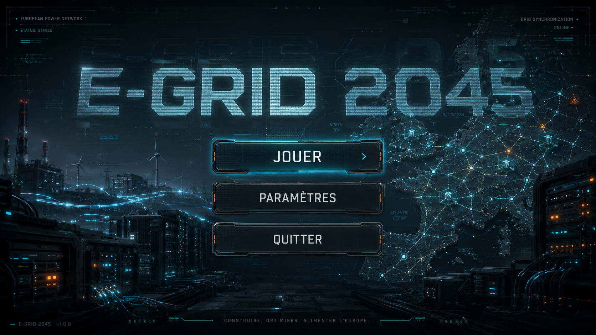
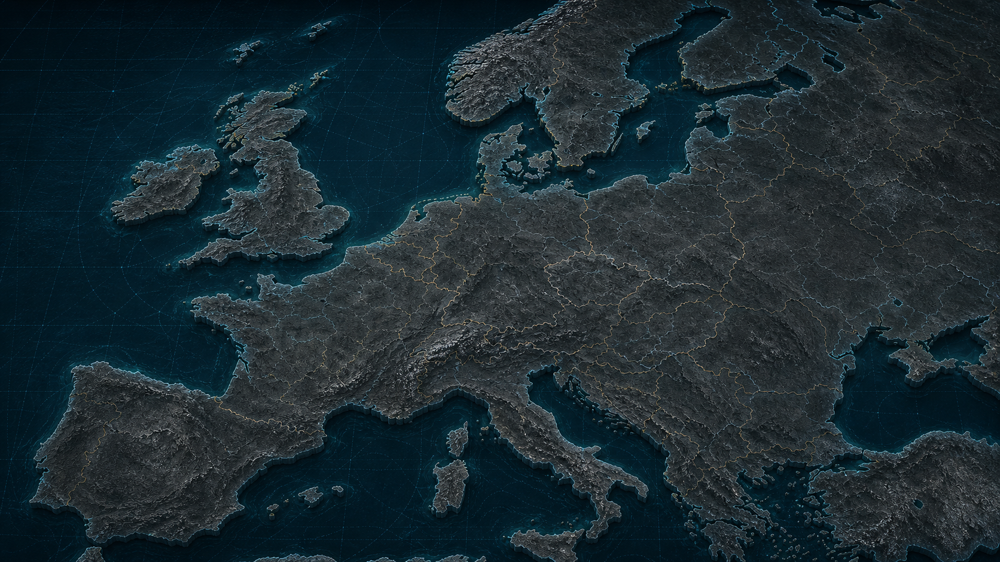

Réseau européen
Mutualise l’énergie, mais paie les pertes de distance et la congestion quand les imports deviennent massifs.
E-Grid 2045 transforme l’IA en sujet concret : pas d’indépendance numérique sans énergie maîtrisée, datacenters refroidis, chercheurs disponibles et chaîne d’approvisionnement capable de soutenir le compute. Le prototype est jouable directement sur le web, ou téléchargeable pour Windows, macOS et Linux.

Le joueur pense lancer des datacenters. Il découvre vite qu’une stratégie IA autonome repose sur un système complet : énergie locale, réseau européen, refroidissement, chercheurs, compute et capacité industrielle à tenir dans la durée.
Mutualise l’énergie, mais paie les pertes de distance et la congestion quand les imports deviennent massifs.
Place les datacenters près du froid, des fleuves, de la mer ou de technologies avancées de refroidissement.
La progression AGI dépend du compute exploitable, des chercheurs disponibles et de la stabilité du réseau.
Le gaz sauve le court terme, mais les paliers CO₂ déclenchent coûts, canicules, sécheresses et malus de score.
La page met désormais au premier plan l’idée centrale du prototype : l’usage de l’IA dépend d’une chaîne physique et industrielle. Sans maîtrise du réseau, du refroidissement, du compute, des talents et de l’approvisionnement, l’autonomie d’usage reste fragile.
GPU, serveurs, maintenance, énergie et eau froide forment une chaîne critique. Le jeu rend visible ce qui se cache derrière une requête IA.
Utiliser l’IA pour des usages stratégiques suppose de ne pas dépendre entièrement d’infrastructures externes ou de capacités non garanties.
Le compute n’est jamais abstrait : il consomme, chauffe, sature le réseau et oblige à planifier un mix capable de tenir pendant vingt ans.
La victoire ne vient pas d’un datacenter géant isolé, mais d’un continent coordonné : régions, réseau, recherche, industrie et sobriété.
Le player vidéo laisse place à une section de remerciement claire : communauté, expertise énergie et accélération IA réunies autour d’un même objectif de sensibilisation.

E-Grid 2045 remercie DefendIntelligence, ENGIE et OpenAI pour le cadre, l’énergie et l’impulsion créative qui ont permis de transformer un sujet complexe en prototype jouable.
Le relais créateur et Twitch pour parler d’IA, de compréhension publique et d’enjeux concrets.
Le cadre énergie pour relier datacenters, réseau, refroidissement et contraintes industrielles.
L’appui IA pour accélérer la conception, le prototypage et la clarification du message.
Image : Les Numériques.
Les captures existantes servent de matière forte pour vendre l’ambiance : bleu nuit, cyan électrique, violet compute, alertes chaudes et interface de stratégie moderne.

Signature visuelle techno, glow cyan et ton premium dès l’entrée.
Flux, régions et tensions visibles sans transformer le jeu en dashboard.

Le compute devient territorial, lumineux et dépendant du froid.

Une Europe stylisée qui se densifie avec les choix du joueur.
Universités, gaz de démarrage, renouvelables et premiers datacenters.
Anticiper nucléaire, stockage, refroidissement et pertes réseau.
Convertir compute, chercheurs et capacité industrielle en progression AGI européenne.
Survivre aux blackouts, sécheresses, canicules et dépendances critiques.

Le repo embarque un éditeur web pour découper et affiner les 30 régions de gameplay directement dans le navigateur. Résultat : un pipeline court, designer-friendly et exploitable par Godot.
E-Grid 2045 sensibilise à une idée simple : l’IA souveraine n’est pas qu’une affaire de modèles, c’est une question d’énergie, d’infrastructures, d’approvisionnement et de résilience européenne. Lance la version web ou récupère un build desktop pour le demo day.